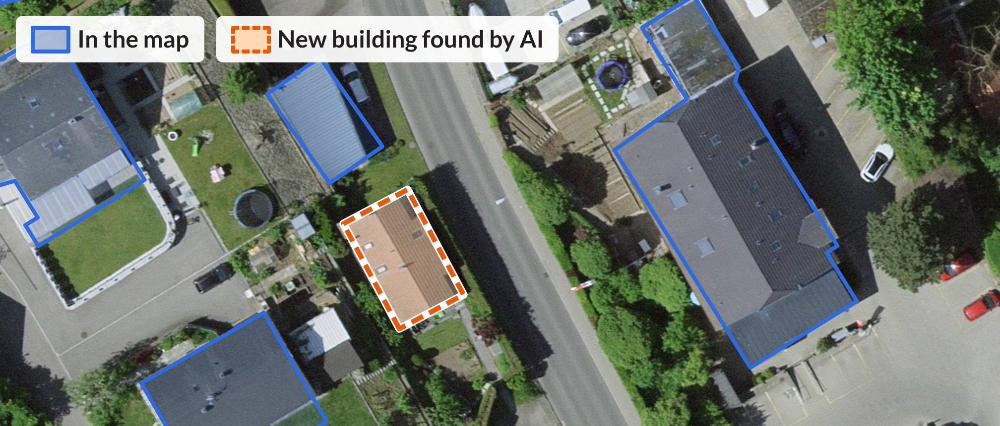

Talk: Thursday 26 November 2026, 12:15 pm, Room 110 (Stream 7), Melbourne Convention and Exhibition Centre
Our internal model scans new aerial imagery and flags only the buildings and streets that have changed. Your editors no longer have to check every tile by eye.

The ProSuite platform has been the foundation for data production at the national mapping agencies of Switzerland, Germany and Austria for over 20 years. The change detection workflow was developed together with swisstopo and uses the same quality assurance that runs their production today.
See what the AI finds in your own area before you commit to anything.
You send us 10 to 30 km² of recent aerial imagery and your current building or road layer.
We run the change detection and ProSuite QA on your data, hosted in Australia or on your own servers.
Your editors get a ranked work list in ArcGIS Pro, plus honest accuracy figures for your area, so you can decide whether it is worth rolling out.
“Benchmarking and Integrating GeoAI for Orthophoto-to-Vector Change Detection”
Locate26, Thursday 26 November 2026, 12:15 pm, Room 110 (Stream 7),
Melbourne Convention and Exhibition Centre